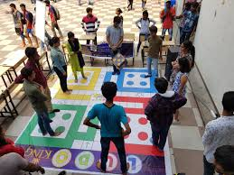
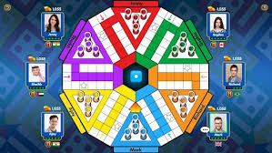
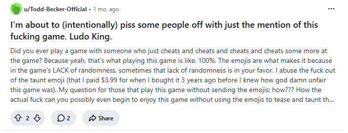

The Ludo King community page is a place where players can connect, share ideas and enjoy the game together. Players can discuss strategies, share their best moments and learn new tips from other fans. Ludo King is more fun when played with friends and family, and this community helps bring players together from around the world.

Good strategy is important in Ludo King. Players should protect their tokens, think carefully before moving and try to block opponents whenever possible. Planning moves in advance can help players win the game faster.

New Ludo King updates have added exciting game modes and smoother online gamaplay. players can now enjoy better multiplayer matches with friends and family.
